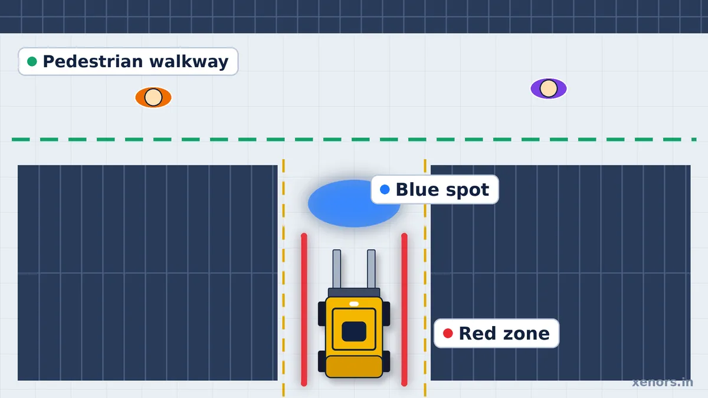
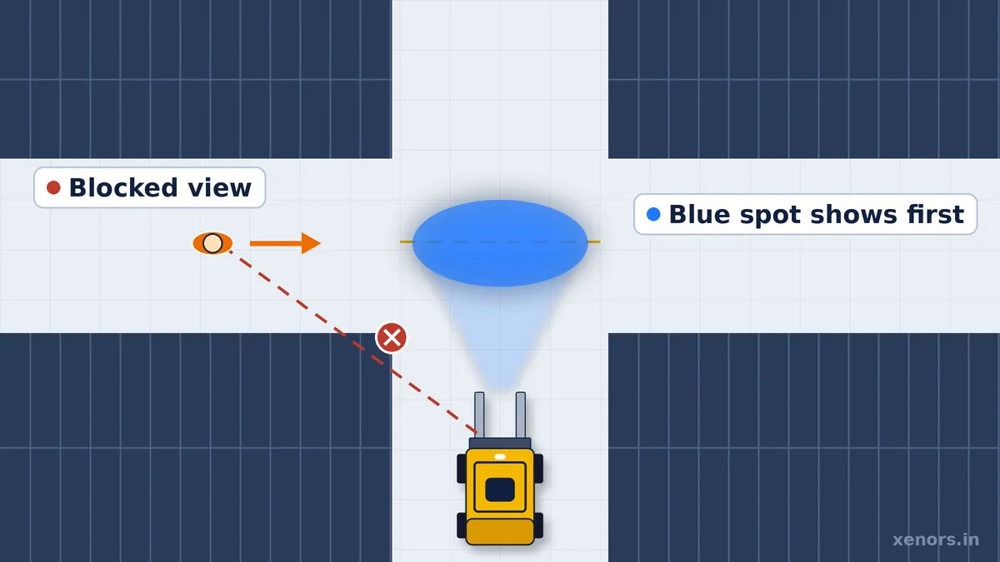
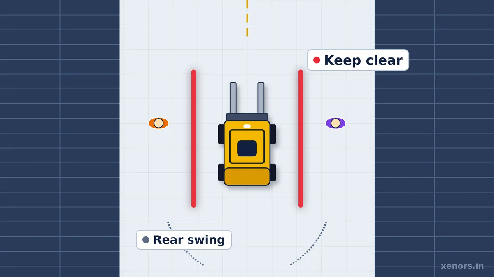
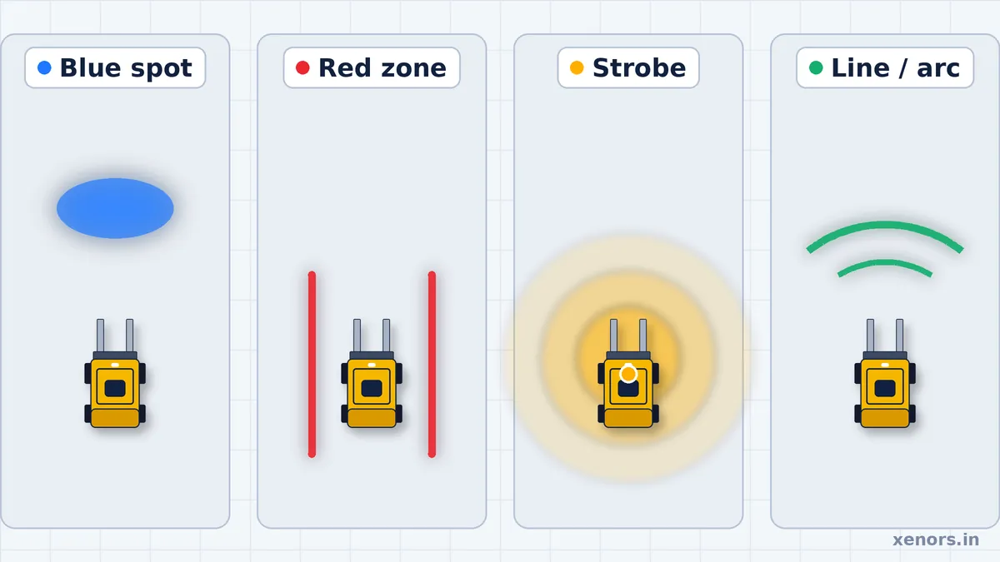

Forklift Safety Lights: Types, Blue Spot vs Red Zone & Buying Guide

A forklift safety light tells pedestrians that a powered industrial truck is moving nearby, often before the driver and the person on foot can see each other. A single forklift safety light can project a blue spot ahead of the truck, draw red lines along its sides or flash an amber strobe overhead. Used well, forklift safety lights add a few seconds of awareness at blind corners, rack intersections and loading bays, which is exactly where pedestrian and forklift paths cross.
This guide explains how each type works, how to set up warehouse forklift safety lights, what to check before purchasing. It is written for warehouse, EHS, plant and fleet managers who want practical detail rather than product hype. The short version is that lights are a useful warning layer, but they are not a substitute for traffic rules, training, separation of people and trucks, or a proper risk assessment.
What Is a Forklift Safety Light?
A forklift safety light is an auxiliary visual warning device fitted to a forklift or other powered industrial truck. It projects a colored spot, line or arc onto the floor, or flashes a strobe, so pedestrians and other drivers notice the truck before it reaches them. It supports pedestrian safety but does not replace training, traffic rules, horns or physical barriers.
The problem it solves is simple to describe and hard to solve any other way. Forklifts are quiet when electric and loud when diesel, and in both cases they work in places where hearing protection, background noise and rack aisles hide the sound of an approaching truck. Racking and stacked pallets also block sight lines at intersections, so a driver and a pedestrian can arrive at the same point without ever seeing each other. A visual signal that appears on the floor ahead of the truck, or beside it, can be noticed from the side, from a distance and without being heard. That is why warehouse forklift safety lights have become common in distribution centers, factories, cold stores and loading bays.
It helps to be clear about the limit. A light is a warning, not a barrier. In the usual hierarchy of controls, separating pedestrians from trucks with physical barriers, marked walkways and one-way routes is stronger than any warning device, and training and supervision sit below that. A forklift safety light belongs in the warning layer, working alongside the horn, speed limits, mirrors, cameras, pedestrian crossings and site rules. If someone is looking at a phone, wearing a hood or simply not expecting a truck, a light can still be missed. Treat it as one of several overlapping controls, and expect it to work best where it supports a clear, enforced traffic plan for forklift pedestrian safety.
Main Types of Forklift Safety Lights
Most products sold as forklift safety lights fall into four families. They use different projection patterns, they answer different hazards and they are often combined on the same truck. The names below are the ones buyers search for, but manufacturers use many labels, so always check the pattern, color and mounting position on the datasheet rather than relying on the name alone.
Forklift Blue Spot Light
A forklift blue spot light (also called a blue light or blue point light) projects a small, bright blue patch onto the floor, usually ahead of the truck in its direction of travel and sometimes behind it when reversing. The idea is that the spot reaches a blind intersection before the truck does. Someone about to step out from behind racking sees blue light on the floor first and has time to stop. This kind of blue spot warning is probably the most widely recognized pedestrian cue in modern warehouses.
- Front and rear projection. Fit one light at the front for forward travel and another at the rear for reversing. Some operations use two at the front to widen coverage.
- Warehouse use. Blue spots earn their place at rack ends, aisle exits, dock doors and any point where a pedestrian route crosses a truck route.
- Blind intersections. This is the main job. The spot lands in the cross aisle while the truck itself is still hidden behind the rack face.
- Pedestrian awareness. Blue is uncommon on warehouse floors, so it stands out against grey concrete. On very bright, glossy or colored floors the contrast drops, which is why on-site testing matters.
- Mounting angle. Height and tilt decide where the spot lands. Too steep and it sits under the truck where nobody sees it; too shallow and it spreads thin. Aim it with the load carried at its normal travel height, because the mast and load can block the beam.
- Projection distance. The usable distance depends on the product, mounting height and ambient light. Take the figure from the datasheet, then confirm it on your floor, and match it to your speed limits and stopping distances. A spot that lands only a short way ahead gives little warning to a fast truck.

Forklift Red Zone Light
A forklift red zone light works differently. Instead of warning of approach, it draws a visible keep-clear boundary along the side of the truck, so a pedestrian can see how close is too close. Red zone warning is a form of line projection: one light produces one line, and fitting a light on each side marks both flanks. It is a practical way to show a forklift exclusion zone without painting the floor, which matters in areas where layouts change often.
- Side boundaries. The lines run along the length of the truck so people walking past can judge their distance to the vehicle and the load.
- Exclusion zones. The lines turn an invisible rule (“stay away from moving trucks”) into something people can see and follow, and give supervisors something concrete to point to.
- Pedestrian clearance. Use the lines to reinforce minimum clearance in narrow aisles, loading bays and staging areas where people and trucks share space.
- Rear swing considerations. A counterbalance forklift steers with its rear wheels, so the tail sweeps wider than the front in a turn. Side lines show where the truck is now, not where the rear will be mid-turn, so plan extra clearance at corners and consider an additional rear-facing light.

Forklift Strobe Lights
Forklift strobe lights are the oldest and simplest signal. A flashing amber or colored light mounted high on the overhead guard says “a vehicle is here” from a long way off and from many angles. They are inexpensive, familiar to everyone and useful in yards, ramps and mixed traffic where pedestrians cannot be separated completely.
- General vehicle visibility. A strobe is a presence signal. It works well to alert people who are some distance away or approaching from the side.
- Use cases. Outdoor yards, loading ramps, charging areas and any place where a forklift crosses between indoor and outdoor zones.
- Indoor and outdoor use. Indoors a strobe is usually clear against ceiling and rack shadow; in strong daylight a weak unit can wash out, so check brightness and sealing for outdoor duty.
- Limitations. A strobe does not show which way the truck is heading or how large the danger zone is. Racking can hide a roof-mounted light, and when every vehicle flashes all the time, people stop paying attention to it.
Forklift Laser Light or Line-Projecting Light
Buyers often search for a “forklift laser light”, and some sellers use the phrase loosely. In practice, most floor-projecting forklift lights use high-power LEDs with optics that shape a spot, line or arc. They are not lasers. True laser line projectors exist, but they fall under laser product safety classes, and the class and eye-safety information should come from the manufacturer. Do not assume that a sharp line on the floor means a laser, and do not assume that an LED projector is automatically free of glare concerns.
- Line projection. A straight line beside or ahead of the truck, used as a boundary or a direction cue.
- Arc projection. A curved pattern ahead of or behind the truck that spans a wider angle, useful at docks and junctions where people can approach from several directions.
- Visibility. Brightness, line sharpness and color all affect how well the pattern shows up against your floor and ambient lighting. Ask for photos taken on a floor similar to yours.
- Eye safety. If a product is described as a laser, ask for its laser class and safety documentation and follow the manufacturer’s mounting and use rules. If it is an LED projector, ask for the beam specification and any glare guidance.
- Manufacturer specification. The technology, power, input voltage, ingress protection and beam pattern should all be written on the datasheet. If they are not, that is a signal to ask more questions.
How to Set Up Warehouse Forklift Safety Lights
To set up warehouse forklift safety lights, survey where trucks and pedestrians meet, choose a pattern for each hazard, mount and wire the lights within the truck manufacturer’s limits, aim the projection with a normal load, then test and train everyone on what each signal means before you roll out.
Start with a site traffic survey
Walk the site during a busy shift with a floor plan and mark every place where forklift routes meet pedestrian routes. Look for blind corners, rack intersections, aisle exits into open floor, doors that open onto truck routes, loading bays, charging areas and places where pedestrians cut across to save time. Record peak traffic times, typical truck speeds, floor type and lighting conditions. Talk to drivers and pickers, who usually know exactly where the near misses happen. The goal is a short list of real hazards, ranked by likelihood and severity, that the lights are meant to address. This is the core of factory traffic safety planning, and the same exercise supports other controls such as mirrors, speed limits and barriers. Xenors’ PLC and automation hub covers related industrial safety and automation topics.
Match the pattern to each hazard
Blind rack intersections usually call for a front blue spot, plus a rear one if trucks reverse through the junction. Shared aisles where people walk beside moving trucks suit red zone lines. Yards and ramps benefit from a strobe for general visibility. Wide docks and turning areas may suit an arc or line projector. Many trucks end up with a combination, and that is fine as long as each signal has a clear meaning.
Mounting and wiring
Mount the lights on a rigid part of the truck, such as the overhead guard or body, where vibration is limited and the beam clears the mast, forks and load. Before drilling, welding or tapping into the truck’s electrical system, check the truck manufacturer’s requirements: obtain the manufacturer’s approval where a modification could affect safe operation or capacity, and follow the applicable installation instructions.
- Voltage. Match the light to the truck’s supply. Electric trucks commonly run on battery systems from 24 V up to 80 V, and internal combustion trucks commonly use 12 V or 24 V. Some lights accept a wide DC range; others need a specific voltage or a converter. Confirm the input range on the datasheet.
- Current and fusing. Add up the current of every light you fit. A 30 W light draws roughly 0.6 A from a 48 V supply and 1.25 A from a 24 V supply, so several lights can add up on a small accessory circuit. Fit an appropriate fuse and follow the supplier’s wiring diagram.
- Switching. Decide whether lights should be on whenever the truck is powered, or only when it is moving or reversing. Tie them to a suitable switched circuit so they cannot be left on or off by mistake.
- Cable routing. Keep cables away from hot parts, pinch points and moving components, use grommets where cables pass through metal, and secure them so vibration does not wear through the insulation.
- Hazardous areas. Standard lights are not suitable for areas with explosive atmospheres. Use equipment certified for the zone.
Have a qualified electrician or the truck dealer do the installation and keep a wiring record for each truck.
Adjust the projection
Aim each light on the actual floor, with the truck carrying a typical load at normal travel height. Check the pattern from a pedestrian’s point of view at the intersection it is meant to protect, not just from the driver’s seat. Mark the bracket position and angle so the setting can be restored after maintenance. Re-check after any knock, bracket change or repair.
Commission, then train
Commission each truck with a short written test: lights switch on and off correctly, the pattern lands where it should, nothing glares into the driver’s eyes and nothing is blocked by the load. Then brief drivers, pickers, visitors and contractors on what each color and pattern means, and add it to site induction. Lights that nobody understands do not change behavior.
OSHA Forklift Light Requirements: What the Rules Actually Say
OSHA does not specify that every forklift must have flashing lights, blue spot lights, red zone lights or a backup alarm. It does require auxiliary directional lighting where general lighting is dim, and employers must protect workers from recognized struck-by hazards, which can make additional warning devices an appropriate control on a particular site.
Warning-light claims get repeated so often that it is worth going to the primary source. In a 2012 letter of interpretation, OSHA answered the direct question of whether forklifts in general industry must have flashing lights or back-up beepers. The agency said it does not specify that powered industrial trucks must be equipped with them. The same letter explains what does apply, and several points matter for anyone choosing forklift warning lights.
- Not universally mandatory. There is no blanket federal rule that every forklift carries a flashing light or a backup alarm.
- Auxiliary directional lighting. Under 29 CFR 1910.178(h)(2), where general lighting is less than 2 lumens per square foot, auxiliary directional lighting must be provided on the truck. This concerns lighting the driver’s way, which is different from a pedestrian warning light.
- Industry standard. OSHA’s letter cites the ANSI/ITSDF B56.1 safety standard, which says the user determines whether operating conditions require additional sound-producing or visual devices such as lights or blinkers, and is responsible for providing and maintaining them.
- General Duty Clause. Employers must furnish a workplace free from recognized hazards likely to cause death or serious physical harm. OSHA states that struck-by and crushing hazards from forklifts fall in this category, that sound and visual devices are feasible ways to reduce them, and that an employer who has not taken feasible steps may be in violation.
- Where appropriate to the worksite. OSHA’s forklift eTool likewise describes equipping trucks with additional sound-producing or visual devices where appropriate to the worksite.
- Horn use. The standard separately expects drivers to slow down and sound the horn at cross aisles and other locations where vision is obstructed (29 CFR 1910.178(n)(4)). Lights do not remove that expectation.
- Inspection. Forklifts must be examined before being placed in service, at least daily, and after each shift when used around the clock (29 CFR 1910.178(q)(7)). Many sites include the warning lights in the same pre-use check.
Which Forklift Safety Light Should You Choose?
Choose a blue spot or arrow for approach warnings, a red zone line for side clearance, an arc for a wider floor boundary and a beacon for general vehicle visibility. The correct option depends on the truck's travel direction, floor visibility, pedestrian routes and mounting position.
Choose by traffic situation
- Blind rack crossing: front or rear blue spot or directional arrow projected into the cross aisle.
- Shared pedestrian aisle: side-mounted red zone line to reinforce a keep-clear boundary.
- Busy loading dock: arc or wide line projector, with a separate vehicle-presence beacon where useful.
- Frequent reversing: rear-facing spot or arrow; do not rely on a forward-only warning.
- Bright or glossy floor: compare projected contrast during a live trial before ordering.
No warning light physically stops a vehicle or guarantees pedestrian separation. Use it alongside route segregation, speed management, training and maintained horns.
Why Forklift LED Safety Lights Are Popular
Almost every modern floor-projecting product is a set of forklift LED safety lights, and for good reasons. It is worth understanding which of those reasons actually matter for your decision.
- Efficiency and electrical load. LEDs convert more of their input to light than filament or halogen sources, so a bright projection can come from a modest wattage. That keeps the load on the truck’s accessory circuit low.
- Long service life. Manufacturers typically quote tens of thousands of hours. Treat that figure as a stated claim, not a guarantee, and ask what it assumes about temperature and drive current.
- Industrial durability. Solid-state light sources tolerate vibration far better than fragile filaments, which suits trucks that bounce over dock plates and expansion joints.
- Voltage compatibility. Many industrial LED lights accept a wide DC input so one model can fit several truck types. Check that the range covers your fleet, including the highest voltage a fully charged battery reaches.
- IP rating. The Ingress Protection rating describes dust and water resistance. IP67 means dust-tight and able to withstand temporary immersion in water, but it does not mean the light will survive repeated high-pressure washing; that is covered by other ratings, so check what your cleaning routine involves.
- Brackets and housing. A die-cast aluminum housing helps shed heat, which protects the LEDs and driver. A stainless steel or similarly robust bracket resists corrosion and keeps the aim stable. Cheap brackets that flex or loosen ruin the projection.
- Beam pattern. The optics decide whether the output becomes a tight spot, a crisp line or a wide arc. Two lights with the same wattage can look very different on the floor.
One caution: LED does not automatically mean safest. A poorly designed unit can have weak optics, a fuzzy pattern, poor heat management, flicker or weak sealing. The label tells you the light source, not the quality of the product. Judge a light by its beam pattern on a floor like yours, its documented ratings and its build, and test before you standardize.
Forklift Warning Lights: How to Choose the Right Signal
Choosing among forklift warning lights is partly about hardware and partly about meaning. The best signal is the one people understand instantly and see reliably in your conditions.
- Color meaning. There is no single universal color code for forklift warning lights across all sites. Blue is commonly used as an approach cue, red as a boundary or danger cue and amber as a general caution or vehicle-present cue. Pick a scheme, write it down and apply it consistently.
- Consistency. If one truck projects red as a boundary and another uses red as an approach warning, pedestrians will learn the wrong lesson. Standardize colors and positions across the fleet, including rental and visiting trucks where you can.
- Blue. Distinctive on most floors and well suited to a forward or rearward spot that signals approach.
- Red. Strongly associated with stop and danger, which suits keep-clear lines. Avoid mixing it with other red signals on site, such as alarm beacons, that could confuse the message.
- Amber. A familiar vehicle-present color for strobes and beacons, useful for outdoor and mixed traffic.
- Environment. Cold stores, dusty plants, wet docks and outdoor yards each place different demands on sealing, brightness and condensation behavior.
- Floor visibility. Dark or matt floors show projections well. Light, glossy, epoxy-coated or patterned floors can reduce contrast. Test on your actual surface.
- Lighting conditions. Bright daylight at dock doors can wash out a projection, while a strobe in a dim aisle can feel harsh.
- Glare. Make sure the light does not shine into the driver’s eyes or dazzle pedestrians at close range.
- Do not rely on color alone. Some people have color vision deficiency, so use position and pattern as well: a spot ahead means approach, lines at the sides mean keep clear.
- Training. Whatever you choose, teach it. A one-page signal guide at the pedestrian entrance, in induction and on notice boards costs almost nothing and makes the lights far more effective.
Best Forklift Safety Lights: Buyer’s Checklist
There is no single “best” product for every site, so the practical way to find the best forklift safety light is to work through a checklist and compare candidates against it. Ask every supplier for the same information in writing.
- Hazard type. Write down the hazard first: blind intersection, shared aisle, dock, yard. Buy to the hazard, not to a catalog name.
- Projection type. Spot, line, arc or strobe, and whether you need one or several on each truck.
- Color. Match your site color scheme and check that the supplier can provide the colors you need.
- Operating voltage. The full DC input range, and whether it covers your highest and lowest truck voltages.
- Wattage. Power draw per light, and whether your accessory circuit or converter can carry the total.
- IP rating. Which rating, and what it covers; ask whether it applies to the whole assembly including the cable gland.
- Mounting. Bracket material, adjustability and fixing method, and whether a mounting drawing is available for your truck type.
- Floor visibility. Photos or a demonstration on a floor similar to yours, in lighting similar to yours.
- Ambient light. How the pattern holds up near bright dock doors or skylights.
- Indoor and outdoor suitability. Sealing, UV resistance and brightness for outdoor use.
- Temperature range. Operating limits, especially for cold stores and hot foundry or plant areas.
- Cable protection. Cable length, jacket quality, connectors and strain relief.
- Warranty. Duration, what it covers and whether it is on-site, return-to-base or offsite.
- Replacement support. Availability of spares, lead times and a named contact.
- Serviceability. Whether lenses and brackets can be replaced without scrapping the whole unit.
- Training. Whether the supplier provides signal guides, installation guidance or commissioning support.
Finish by running a pilot on one truck before buying for the fleet. A pilot reveals mounting problems, glare and wiring issues that a datasheet never will.
Blue Spot vs Red Zone vs Strobe vs Line Light
The table below summarizes how the four main patterns compare. Use it as a starting point, then adjust for your layout, truck fleet and lighting.
| Type | Best Use | Main Advantage | Limitation / Watch-Out |
|---|---|---|---|
| Blue spot | Blind intersections, rack ends, doors and aisle exits where pedestrians cross the truck’s path | Shows the truck’s direction of travel before it arrives; easy for people to recognize | Covers one point, not the sides; weaker on bright or reflective floors; aim depends on mounting angle and load height |
| Red zone | Shared aisles, loading bays and tight areas where people walk close to the truck | Makes the keep-clear boundary visible without floor paint or tape | Marks proximity, not approach; does not show the rear swing of the truck unless the layout is planned for it |
| Strobe | General vehicle visibility indoors and outdoors, yards and mixed traffic | Visible from a long way off and from many angles | Does not show direction or danger zone; can be blocked by racking and lost in bright light; overuse causes warning fatigue |
| Line or arc light | Wide docks, junctions and turning areas where a broader pattern is useful | Draws a distinct line or arc that is hard to mistake for floor markings | Pattern and brightness vary by product; if sold as “laser”, confirm technology, class and eye-safety data |

In most warehouses the strongest results come from pairing patterns rather than choosing one. A front blue spot handles the approach to blind intersections, red zone lines handle proximity in shared aisles, and a strobe adds long-range visibility where the layout is open. If the budget limits you to one light per truck, choose according to your highest-risk hazard from the site survey.
Forklift Safety Light Price: What Affects the Cost
Forklift safety light price depends mainly on the light type, wattage and optics, input voltage range, IP rating, housing material, brand and warranty. A basic strobe usually costs much less than a high-power blue spot, red zone or arc projector, and a wide-voltage, sealed, die-cast unit costs more than a basic one. Always compare written quotations that state the same specification.
Because specifications differ so much, a single “average price” is misleading. Use the factors below to compare quotes fairly and to see why two lights that look alike on a web page can be priced very differently.
- Type and pattern. A strobe, a single spot, a line projector and an arc projector use different optics and drivers, and cost different amounts.
- Power and optics quality. Higher wattage and better lenses give a brighter, sharper pattern. Weak optics give a fuzzy pattern even on a high-wattage label.
- Voltage range. A wide DC input range covers more truck types with one model; a fixed-voltage unit may need a converter.
- Protection and build. IP rating, housing material, bracket quality and cable gland sealing all affect durability and cost.
- Warranty and support. Length and type of warranty, spares and installation help all sit behind the quoted price.
- Quantity per truck and fleet size. Front and rear lights, plus side lines, multiply the cost per truck; volume orders often attract better rates.
- Taxes, shipping and installation. Ask whether the quote includes GST, delivery and fitting, since these can change the real cost.
The cheapest option is rarely the lowest cost over time. A light that loses brightness, leaks or shifts its aim within months costs more in replacement, downtime and lost trust than a better-built unit bought once. Pilot one truck, then price the fleet.
Five-Minute Forklift Light Visibility Test Before You Buy
A good product photo is not proof that the projected warning will be clear on your floor. Ask for a demonstration or use a sample unit to check these five conditions. Record observations instead of relying on a claimed universal projection distance.
- Daylight: inspect the projection near a bright dock door and under overhead skylights.
- Dark or reflective flooring: check whether a spot, line or arc remains distinguishable from floor markings.
- Loaded truck: verify that the mast and normal load do not block the projected beam.
- Pedestrian viewpoint: view the signal from a blind aisle crossing rather than only from the driver's seat.
- Turning and reversing: observe whether the warning remains useful when the truck changes direction or the rear swings outward.
Keep the trial record with the truck model, mounting height, floor type, lighting conditions and the operator's feedback. Do not treat a painted or projected line as a physical barrier.
Inspection and Maintenance
A warning light that has stopped working, or that points at the wrong place, is worse than none because people trust it. Build checks into routines you already run.
- Pre-use inspection. Include the safety lights in the operator’s pre-shift check alongside brakes, horn, forks and other items. Confirm each light switches on and projects a clear pattern.
- Lens cleaning. Dust, shrink-wrap residue, oil mist and condensation dim the projection. Wipe lenses with a soft cloth and a cleaner approved by the manufacturer.
- Bracket inspection. Vibration loosens fixings. Check that brackets are tight, undamaged and still at the marked angle.
- Cable damage. Look for cuts, chafing, crushed sections and loose connectors. Replace damaged cable rather than taping over it.
- Alignment. Check the projection on the floor with a normal load. A small bump can move the aim enough to change where a spot lands.
- Flickering. Intermittent light often points to a loose connection, low voltage, water ingress or a failing driver. Take the truck out of service for the light, find the cause and repair it.
- Service interval. Set a documented interval, for example a monthly formal check and a deeper review at each planned truck service, and adjust it to the failures you actually see.
- Post-repair re-alignment. After any repair, bracket change, mast work or panel replacement, re-aim and re-test the lights before the truck returns to work.
Keep a short record per truck: light model, mounting position, last alignment check and any faults. It makes troubleshooting faster and shows an inspector or auditor that the controls are actively managed.
Practical Warehouse Implementation Plan
A phased rollout limits risk and builds the evidence you need to justify fleet-wide spending. This is a realistic sequence for most sites.
- Audit hazards. Run the site traffic survey, rank the intersections and routes, and gather any near-miss and incident records.
- Pilot one forklift. Choose a truck that works the busiest hazard areas, so the pilot gets a meaningful test.
- Determine mounting. Agree mounting positions, wiring route and approvals with the truck supplier or maintenance team.
- Test projections. Check pattern, distance, glare and visibility on your floors, in your lighting, with a normal load.
- Train workers. Brief drivers and pedestrians on what each light means and what to do when they see it.
- Standardize colors. Lock in one color scheme and mounting standard, and write it into the site traffic procedure.
- Monitor near misses. Track near misses and driver and pedestrian feedback for several weeks, and compare with the baseline.
- Adjust. Fix aim, brightness, position or pattern problems found in the pilot before you copy the setup.
- Expand fleet-wide. Roll out in batches, commissioning each truck the same way and adding the lights to inspection and maintenance routines.
Lights are one layer of a wider program. Teams that also review camera-based pedestrian detection, mirrors and layout changes often find the layers support one another; the Xenors AI hub covers some of the detection technology, and the Technology section collects related guides.
Forklift Safety Light Options in India: Spot, Arrow, Arc and Red Zone
The table compares common light patterns and buyer search terms; it does not imply that a particular wattage or model is currently stocked by any supplier. Confirm product availability and specifications directly.
| Light type | Common buying search | Where it helps | Verify before ordering |
|---|---|---|---|
| Blue spot | Forklift blue spot light | Blind aisles and intersections | Spot contrast, input voltage, bracket and beam angle |
| Blue arrow | Forklift blue arrow projection light | Showing direction of approach | Arrow orientation, visibility and front/rear mounting |
| Red zone line | Forklift red zone light | Side clearance in shared aisles | Line width, floor contrast and tail-swing clearance |
| Arc projector | Forklift arc safety light | Broad boundary at docks and turning areas | Arc size, pattern position and mounting height |
| Warning beacon | Forklift revolving or strobe warning light | General vehicle visibility | Flash pattern, brightness and environmental protection |
How to compare a quotation
Request a model-specific quote listing power, voltage range, beam shape, enclosure protection, mounting accessories, GST, freight, installation and warranty. A quoted price for a 10 W spot is not directly comparable with a higher-power arc or two side-line units.
Where to Buy Forklift Safety Lights
If you are ready to compare products, Hesham Industrial Solutions lists forklift safety lights by category on its shop. Prices are quoted on request, so ask for a written quotation that states GST, shipping, installation and warranty terms before you order.
As an example of the information you should expect on a datasheet, the seller’s listing for its 10 W blue spot warning light (model HIS-LED-FLW-002) states two CREE LEDs, a 10–100 V DC input range, blue or red color, a die-cast aluminum housing, an IP67 rating, a spot beam and a one-year offsite warranty. AMC is stated as unavailable for this offer; confirm this and all other terms directly with the seller. Use the same list of questions on any supplier’s product, and compare like with like.
- Model
- HIS-LED-FLW-002, 10 W blue/red spot light
- Input
- 10–100 V DC
- Protection
- IP67, die-cast aluminum housing
- Price
- On request (get a written quotation)
- Warranty
- 1 year offsite warranty, as listed by the seller
- AMC
- Not available, as listed by the seller
Compare forklift safety lights for your site
Browse the seller’s forklift safety light category, then ask for a quote that matches your truck voltages and mounting needs.
View Forklift Safety Lights & Request a Quote
Opens the Hesham Industrial Solutions category page in a new tab. Commercial link.
Whoever you buy from, ask for the datasheet, a mounting drawing and the warranty terms in writing, and run a one-truck pilot before ordering for the fleet.
Verified Forklift Blue Spot Light: Specifications, Price and Customer Feedback
For buyers comparing a specific model, the Hesham Industrial Solutions product listing identifies the Forklift Blue Spot Warning Light 10W (HIS-LED-FLW-002). The seller lists 10 W power, two CREE LEDs, 10–100 V DC input, blue/red light options, die-cast aluminum housing, IP67 protection, spot beam and a one-year offsite warranty. These are seller-published specifications, not independent laboratory test results.
Price: Price on request. Ask the supplier for a written quotation covering GST, shipping, installation, availability, warranty exclusions, and the applicable return or refund terms. No verified fixed ₹25,000 selling price or standardized return period is published for this product, so neither is claimed here. Confirm AMC availability with the seller before ordering.
Published seller-site customer rating
On the seller's product page, this specific 10 W blue spot model currently displays 5 out of 5 stars from 1 published review, attributed to ashok and dated . The review says: good product as well as good sales person behaviour
. This rating belongs to the seller's product listing, not to this Xenors article, the complete forklift-safety-light category, or an independent Xenors testing panel. The reviewer's independence has not been verified by Xenors.
View the original product listing, rating and review at Hesham Industrial Solutions. Review totals can change; check the source for the latest figures. The author has disclosed an employment relationship with the seller above.
Frequently Asked Questions
What is a forklift blue spot light?
A forklift blue spot light is a floor-projecting warning light that throws a bright blue patch ahead of, or behind, a forklift. It shows pedestrians where the truck is about to travel, so people at blind corners and aisle ends see the signal before the vehicle arrives. It supports the horn, speed limits and traffic rules rather than replacing them.
What does a forklift red zone light do?
A forklift red zone light projects red lines, usually along one or both sides of the truck, to mark a keep-clear area around the vehicle. Pedestrians can see how close is too close, and drivers get a visual reminder that anyone inside the lines is within the truck’s working envelope.
Which color is best for a forklift safety light?
No single color is best. Blue spots are commonly used as an approach warning, red lines as a keep-clear boundary and amber strobes for general vehicle presence. What matters most is that each color has one meaning across the whole site and that pedestrians and drivers are trained on it.
How far should a blue spot project?
There is no universal distance. The right figure depends on truck speed, stopping distance, aisle layout, mounting height and the lighting at the site. Start from the manufacturer’s rated projection, then verify on your own floor with the truck loaded and moving at normal speed.
Are LED forklift lights better?
LED forklift lights are the usual choice because they draw little power, run cool and generally last a long time. The LED label alone says nothing about beam quality, sealing or build, so compare beam pattern, IP rating, voltage range, housing and warranty rather than the LED badge.
What is a forklift laser light?
Buyers use the phrase for floor-projecting lights that draw sharp lines or arcs. Many of these products are LED projectors, not true lasers. A genuine laser product carries a laser class and eye-safety information, so ask the manufacturer which technology it is and request the documentation.
What is the best forklift safety light for warehouses?
It depends on the hazard. Blue spots suit blind intersections, red zone lines suit shared aisles, strobes add general visibility and arc projectors suit wide docks. The best choice is the one matched to your hazard, truck voltage, floor and lighting, and proven in a pilot. Many sites combine a blue spot with red zone lines on the same truck.
Can red zone and blue spot lights be used together?
Yes. They solve different problems: the blue spot gives early warning of approach, while red lines mark the keep-clear boundary. Test the combination at a real intersection, make sure neither pattern washes out the other or glares into the driver’s eyes, and document what each color means.
Where should forklift warning lights be mounted?
Usually on the overhead guard or body, at the front and rear, where the beam is not blocked by the mast, forks, load or guard. Height and angle decide where the projection lands. Follow the light manufacturer’s mounting instructions, check the truck manufacturer’s requirements for modifications, and protect the wiring.
How much does a forklift safety light cost?
Prices vary widely with light type, wattage, optics, voltage range, IP rating, housing material, brand and warranty. A basic strobe costs far less than a high-power projecting blue spot or line light. Ask each supplier for a written quotation that states GST, shipping, installation and warranty terms, and compare like with like.
Are forklift safety lights required by OSHA?
Not universally. OSHA has stated that its powered industrial truck standard does not specify that forklifts must have flashing lights or back-up beepers. Auxiliary directional lighting is required where general lighting is below 2 lumens per square foot, and employers must still address recognized struck-by hazards, which can make warning devices an appropriate control on some sites. Check current OSHA guidance and any local rules for your location.
Are forklift strobe lights required?
There is no blanket OSHA rule that every forklift must carry a strobe. A strobe may still be required by your site policy, a customer, an insurer or local regulation, and the industry standard cited by OSHA leaves it to the user to decide whether operating conditions call for additional visual devices.
Can safety lights replace the forklift horn?
No. Lights add a visual warning but do not replace the horn. OSHA’s powered industrial truck standard expects drivers to slow down and sound the horn at cross aisles and other locations where vision is obstructed, so keep the horn working and keep using it.
Final Recommendation
The right forklift safety light depends on the hazard, so match the signal to the problem you found in your survey.
- Blind rack intersections and aisle exits: a front forklift blue spot light, plus a rear one where trucks reverse through the junction.
- Shared aisles and tight areas with people close to trucks: forklift red zone lights on the sides to show the keep-clear boundary.
- Yards, ramps and mixed traffic: a forklift strobe light for long-range visibility, ideally with a floor-projecting light for direction.
- Wide docks and turning areas: a line or arc projector, with the technology and eye-safety information confirmed in writing.
- Busy warehouses with frequent near misses: a combination of blue spot and red zone lights, backed by marked walkways, speed limits, horn use and training.
Whichever forklift safety light you choose, verify the specification, pilot it on one truck, standardize the colors and keep inspecting it. Used as one layer in a wider safety system, it can make forklift pedestrian safety clearer to everyone on the floor. For more practical industrial and technology guides, visit the Xenors Technology hub or the Xenors homepage.
Official Sources, Product References and Further Reading
For verified specifications, check the original manufacturer's datasheet and the supplier's current listing before purchasing. Product availability, prices and warranty terms can change.
- 29 CFR 1910.178: Powered industrial trucks (OSHA)
- OSHA Powered Industrial Trucks eTool: Pre-operation inspection
- OSHA Powered Industrial Trucks eTool: Other safety and warning devices
- OSHA letter of interpretation: powered industrial trucks equipped with flashing lights and/or back-up beepers (November 26, 2012)
- Hesham Industrial Solutions: forklift safety light catalogue
- Hesham 10 W blue spot product specifications and customer feedback